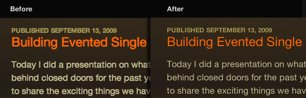

Thin Text in Safari with Snow Leopard
Safari
has a not-so-lovely way of bulking up text using sub-pixel rendering.
On previous versions of Safari, this was fixed with a text-shadow declaration, but since Snow Leopard that method no longer works. Fortunately, I’ve found an alternative.
The thick text is much more noticeable when light text is placed on a dark background. It annoys me so much, that as I was working on a redesign for this site, I seriously thought about throwing out a dark design because I was scared of portly typography. So I dug in, and found a way to slim down the type in my favorite browser. Here’s the solution, and it’s remarkably simple:
body { -webkit-text-stroke:1px transparent; }
@media only screen and (max-device-width:480px) {body{-webkit-text-stroke:0 black;}}There
you go. SImply add that to your css file. Change the selector, if you
need, and put your type on a diet. The second line is to prevent Mobile
Safari from using the technique, as it handles text well, and doesn’t
support transparency on text-stroke.
Here’s a before and after screenshot, so you can see the difference.

I find that Firefox does this more than Safari (for me). My fix was to quit Firefox, launch Safari, quit Safari and then open Firefox back up to see that the problem was eliminated.
I had no clue there was an actual CSS fix. Nice. :)
September 20th, 2009
Thanks for the tip!
September 20th, 2009
Under Preferences > Appearance > Font Smoothing … Did changing the default setting do anything for you? I’m not on a Mac, but I found tweaking the settings addressed this issue for me. I tend to keep Safari4/Win with the Light or Medium setting enabled.
September 20th, 2009
@Chris: Unfortunately, we don’t have that setting on OSX. But ideally I want the type thinner for everyone on Safari, not just me.
September 20th, 2009
I frequently use
opacity: 0.99;to achieve the same effect. The smoothing doesn’t look quite as nice, but it also thins fonts in Firefox. Examples here: http://twitpic.com/ij4ylSeptember 20th, 2009
One thing to consider, most of us on windows and linux are use to, or may even prefer thicker text. This may adversely affect those of us using chrome, or even safari on windows.
September 21st, 2009
Interesting. It is the case, usually, that light text on dark backgrounds get drowned out and lost. In this case, I’m looking at this on Safari 4 on SL and I prefer how your site styles Helvetica.
September 21st, 2009
I’m not sure this will go over too well with everybody. Not to mention that I see nothing like your screenshot in my Safari (of course not here, if you changed it, but neither anywhere else). That looks like a screenshot straight out of FireFox, not Safari; the attention to typography details in Safari has always really impressed me.
September 21st, 2009
Love the rendering here, but “opacity:.99” does seem to produce more consistant rendering.
September 21st, 2009
Looks terrible on the iPhone
September 21st, 2009
Works like a champ for me :) Thanks for the tip!
September 21st, 2009
Go to Preferences > Appearance > and check ‘use LCD font smoothing when available’ which fixes the fonts.
September 21st, 2009
Have you tried something more sensible ? body { font-family: ‘Helvetica Neue’, Arial, sans-serif; /* add others to taste*/ font-weight: 300; } Safari 4.0+ has fairly decent support for multiple font-weights. And the above will benefit Gecko users as well. (the code above doesn’t work for every font-family, only those that shipwith multiple font-weights)
September 21st, 2009
I’ve updated the post to filter out Mobile Safari, as it doesn’t seem to support transparent text-stroke.
September 21st, 2009
I second using something like font-weight: 300—Works in Safari/Firefox very well.
September 21st, 2009
Prior to Safari 4, you were able to achieve this “knockout-type” effect using
text-shadow—however, it was a hack and when rendered properly (ex: by Opera), looked terrible.When Safari 4 came out, I discovered
webkit-text-strokeworked much better. Rather than use atransparentstroke colour, I used rgba(255, 255, 255, 0.3). I hadn’t thought of tryingtransparent—that might be fun to play with.September 21st, 2009
this is very useful to me thanx a lot
September 21st, 2009
Nice tip! I just tested both techniques in Mac Safari 4 and Firefox 3.5. While opacity works in both browsers, the anti-aliasing is cleaner in Safari when you use the
-webkit-text-strokeeffect outlined in the original post.@Philippe I am not seeing the increased support for
font-weight... it’s just like it’s always been, with 600 and 700 being rendered bold, and the other five being rendered normal.September 21st, 2009
So, what’s you’re saying is that you wish OSX displayed font’s like Windows :)
September 21st, 2009
@Tim: NO!! Not at all!!! It’s just that in some circumstances, sub-pixel rendering is a little bulky, so it needs to be trimmed down a bit. But I’d take fat sub-pixel rendering over ClearType any day.
September 21st, 2009
I’ve only just realised that there is a difference. after reading this post. But thanks for introducing webkit-text-stroke to me.
September 21st, 2009
We recently added a -webkit-font-smoothing CSS property to WebKit to provide explicit control over the antialiasing. See http://trac.webkit.org/changeset/48441 for details of the change, including a description of the allowed values for the property. You should be able to test this in the latest WebKit nightly from http://nightly.webkit.org/.
I’d also suggest being more conservative in applying this trick than your example code suggests. Black text on a white background, such as the text within these form fields, often looks worse rather than better when this is applied to it.
September 22nd, 2009